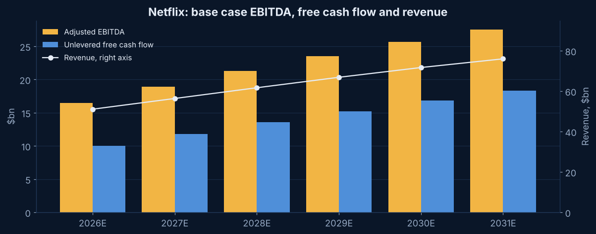
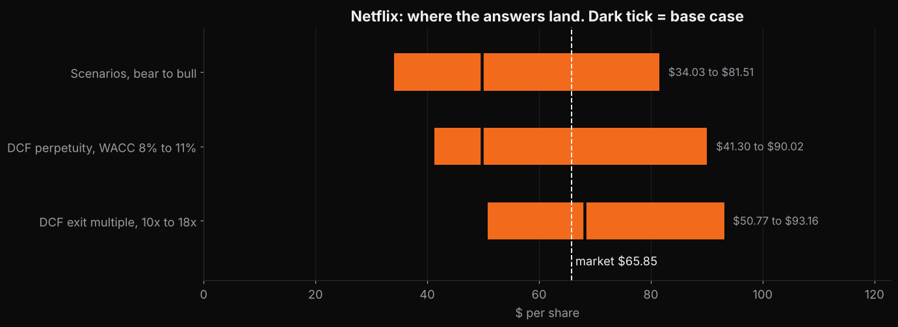

Project
Netflix DCF model.
The streaming business every other company on this site is trying to become. At 17 times EBITDA, what does the price already assume?
Why this company
The benchmark for the Skydance streaming line
Skydance's base case grows streaming 9 percent fading to 4. Netflix grew 13 percent in 2026 on $51 billion of revenue at a 31.5 percent operating margin. If I assume Skydance can grow streaming, I should know what the leader earns doing it and what the market pays for it.
Netflix walked away from Warner Bros. Discovery in February 2026 with a $2.9 billion termination fee. I strip it out of cash flow.
The result
The numbers
Base case, perpetuity method at a 10.3 percent WACC and 3 percent long term growth. Below the $65.85 close on October 23, 2026.
Base case, exit multiple method at 14 times 2031 EBITDA. Above the market. The two methods disagree by $18 and that gap is the whole story.
Perpetual growth the price implies. A 10 percent discount rate and 3 percent growth cannot reach $66 on a business that already earns 32 percent margins.
Share of value past 2031. Netflix is a terminal value with a forecast attached, like every growth company.
Bear to bull across both methods. Bear fades subscription growth to 3 percent with flat margins. Bull keeps double digits through 2028 and pushes margins to 39 percent.
Market EV to 2026 EBITDA. Skydance trades at 10, Disney at 9, Fox at 8, Comcast at 4.5.
Model outputs under stated assumptions. Nothing on this page is a recommendation to buy or sell anything.
How it is built
Inputs that differ from the template
- Base year. 2026 guidance of about $51.1 billion of revenue and a 31.5 percent operating margin from the October 20 shareholder letter, split into subscription and about $2.7 billion of advertising.
- Revenue. Subscription grows 10 percent fading to 5. Advertising grows 40 percent fading to 15 off a small base, with 15 new ad markets in 2027.
- EBITDA. Operating income plus property depreciation only. Content amortization, $16.4 billion in 2025, stays inside costs. The margin rises about a point a year to 36 percent by 2031.
- Content cash. Netflix spends about 1.1 times what it amortizes. The excess, about 3.3 percent of revenue, sits in the working capital and content line and fades to 2 percent as spending growth slows.
- Discount rate. Unlevered beta 1.2, almost no leverage, so the WACC is close to the 10.5 percent cost of equity. Cost of debt 5.8 percent, the July 2026 notes repriced about 85 bp over today's Treasury.
- Equity bridge. $15.3 billion of gross debt, $8.2 billion of cash, about 4,164 million shares. The share count is an estimate from market cap over price because I could not retrieve the 10-Q cover, and it is flagged in the model.
Charts
Two pictures

Base case EBITDA, free cash flow and revenueRevenue reaches about $80 billion by 2031. Free cash flow conversion is high because capex is 1.5 percent of revenue and the content line is small relative to the margin. 
Where the answers landThe perpetuity grid reaches the price only below a 9.5 percent WACC. The exit multiple grid straddles it at every WACC. Street targets run $57 to $126.


What I got wrong first
I took the quoted beta at face value
A 1.61 beta off a quote page gave an 11.6 percent WACC and $42 a share. It is a five year regression on a stock that fell by half in 2022. I used 1.2, wrote down why, and the sensitivity grid runs 8 to 11 percent so a reader can put the 1.61 back.
What would change the answer
In order of how much they move it
- The exit multiple. Each turn of EBITDA is worth about $4 a share. 14 times is below the 17 the market pays today and above where a company growing 5 percent should trade in 2031.
- Margin ceiling. The base case stops at 36 percent. Every point of terminal margin is worth about $1.50 a share.
- Advertising. The October 20 letter cut 2026 ad guidance from about $3 billion to $2.7 billion. Ads are 5 percent of revenue, so this is a small line that the market treats as a big one.
- The share count. If the real count is 4,195 million, the diluted figure, every value on this page is about 0.7 percent lower.
Download
The model
Download the Excel model · Back to the five
Blue cells are inputs. Pick a scenario in Inputs cell C5. Sources are numbered and cited next to each figure. Nothing in the model comes from a Bloomberg Terminal or from any employer.